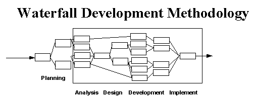
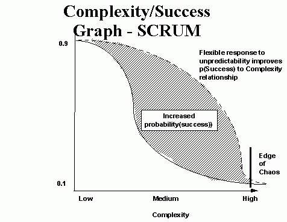
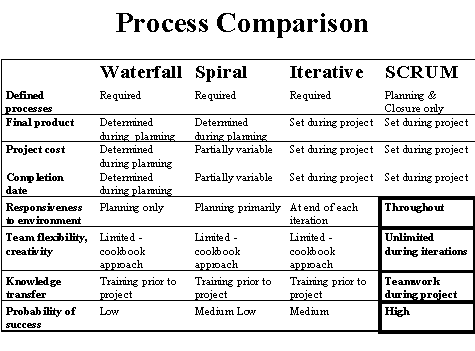

编写最好的软件
审校 林燕锋 [AKA]
译者 littledwarf 林燕锋 Allan bianh
sunshinezhou 胡庆培 [AKA]
"The problem for engineers is that change translates into
chaos, especially when a single error can potentially bring down
an entire system. But, change also translates into opportunity.
It's as simple as this: if there is time to put a certain amount
of functionality into the product easily, then there is time to
put in more functionality at the price of a certain amount of disruption
and risk. Thus does madness creep into our projects - we will tend
to take on as much risk as we possibly can."
"工程师所面临的问题是修改软件会引起系统混乱,特别是一个微小的错误就能导致系统崩溃。但是，修改也能带来机遇。简而言之：如果很轻易地就能给系统增加一定功能，那么就会冒一定的风险增加更多的功能。从而使我们的计划显得有些疯狂－我们将倾向于尽可能地冒风险。"
James Bach. October 1995. "American Programmer"
Copyright 1995 Advanced Development Methods All Rights Reserved
Contents
In this paper we introduce a development process, SCRUM, that treats
major portions of systems development as a controlled black box.
We relate this to complexity theory to show why this approach increases
flexibility and ability to deal with complexity, and produces a
system that is responsive to both initial and additionally occurring
requirements.
在本章中，我们将介绍一种新的开发过程－SCRUM，它将系统开发的主要部分看成一个可控制的黑盒。我们将之与复杂性理论相联系，来说明为什么这种方法改善了适应性和处理复杂问题的能力，并能建立一种适应初始的和额外的需求的系统。
Numerous approaches to improving the systems development process
have been tried. Each has been touted as providing "significant
productivity improvements." None has. As Grady Booch noted, "We
often call this condition the software crisis, but frankly, a malady
that has carried on this long must be called normal."
人们已经提出许多改进系统开发过程的方法。每一种方法都被吹捧为："重大成果性突破。"其实没有一种做到。正如Grady Booch所说的："我们常称这种情况为软件危机，但坦率的说，长久以来我们一直把这种病态看作是正常的。
Concepts from industrial process control are applied to the field
of systems development in this paper. Industrial process control
defines processes as either "theoretical" (fully
defined) or "empirical"
(black box). When a black box process is treated as a fully defined
process, unpredictable results occur. A further treatment of this
is provided in Appendix 1.
在这篇文章中，工业过程控制的观点应用到系统开发领域。工业过程控制定义过程或者是"理论的"（完全定义的）或者是"经验的"（黑盒）。当将一个黑盒过程当作完全定义的过程处理时，会发生不可预测的结果。对这种情况进一步的处理将在附录1中给出。
A significant number of systems development processes are not completely
defined, but are treated as though they are. Unpredictability without
control results. The SCRUM approach treats these systems development
processes as a controlled black box.
许多大型的系统开发过程是非完全定义的，但却当作完全定义的来处理。这就导致了无控制的不可预知性。SCRUM方法在处理系统开发过程时将其看作可控制的黑盒。
The SCRUM approach is used at leading edge software companies with
significant success. We believe SCRUM may be appropriate for other
software development organizations to realize the expected benefits
from Object Oriented techniques and tools.
SCRUM方法现在被很多领先的软件公司成功使用。我们相信SCRUM将会适用于其他的软件开发机构以实现面向对象的技术与工具所期望带来的利益。
Our new approach to systems development is based on both defined
and black box process management. We call the approach the SCRUM
methodology, after the SCRUM in rugby -- a group responsible for
picking up the ball and moving it forward.
我们的系统开发的新方法是基于定义的和黑箱过程管理的。我们借用橄榄球中的SCRUM并称这种方法为SCRUM方法论�D�D一个团队负责拿球向前冲。
SCRUM is a management, enhancement and maintenance methodology
for an existing system. SCRUM will address new or re-engineered
systems development efforts at a later date.
SCRUM是一种对已存在系统的管理，提高和维护的方法。在不久的将来，SCRUM将致力于新的或重组的系统开发。
Software product releases are planned based on the following variables
:
软件产品的发布是基于以下因素制定的：
- Customer requirements - how the current system needs enhancing.
客户需求－现在的系统需要那些改进。
- Time pressure - what time frame is required to gain a competitive
advantage.
时间压力－需要什么样的时间表以获得竞争优势。
- Competition - what is the competition up to, and what is required
to best them.
竞争－竞争的目标是什么，如何最好地实现目标
- Quality - What is the required quality, given the above
variables.
质量－有了以上的因素，那么需要什么样的质量。
- Vision - what changes are required at this stage to fulfill
the system vision.
版本－当前需要什么样的更改以完成系统版本。
- Resource - what staff and funding are available.
资源－有多少可用的资金和员工。
These variables form the initial plan for a software enhancement
project. However, these variables also change during the project.
A successful development methodology must take these variables and
their evolutionary nature into account.
这些因素形成了改进软件项目的最初方案。然而，这些因素是随着项目的进行而变化的。一个成功的开发方法应该将这些因素现在及其将来可能的变化都考虑进去。
Systems are developed in a highly complicated environment. The
complexity is both within the development environment and the target
environment. For example, when the air traffic control system development
was initiated, three-tier client server systems and airline deregulation
did not have to be considered. Yet, these environmental and technical
changes occurred during the project and had to be taken into account
within the system being built. Environmental variables include:
系统是在一个高度复杂的环境下开发的。复杂性同时存在于开发环境和目标环境。例如，当开始开发航空交通控制系统时，三层客户－服务器系统及航线异常情况并没有被考虑在内。然而，这些环境和技术变化通常会发生在项目进行过程中，你不得不在正在构建的系统中考虑到这些因素。环境因素包括：
- Availability of skilled professionals - the newer the technology,
tools, methods, and domain, the smaller the pool of skilled professionals.是否有足够的熟练专业人员――技术、工具、方法、领域越新，相应的熟练专业人员就越少。
- Stability of implementation technology - the newer the technology,
the lower the stability and the greater the need to balance the
technology with other technologies and manual procedures. 实现技术的稳定性――对于越新的技术，稳定性可能就越低，并且更需要去平衡该技术及其它技术和人工程序的关系。
- Stability and power of tools - the newer and more powerful the
development tool, the smaller the pool of skilled professionals
and the more unstable the tool functionality. 稳定性和工具的性能――越是新的和功能强大的开发工具，就拥有更少的熟练开发人员，并且它的功能上的稳定性就越差。
- Effectiveness of methods - what modeling, testing, version control,
and design methods are going to be used, and how effective, efficient,
and proven are they. 方法的有效性――将使用什么样的建模、测试、版本控制及设计方法，他们的效率怎样？是否有足够的保证？
- Domain expertise - are skilled professionals available in the
various domains, including business and technology.行业知识和经验――是否有不同行业(包括商业和技术方面)的专业人才？
- New features - what entirely new features are going to be added,
and to what degree will these fit with current functionality.
新特性――将添加什么样的新特性，这些新特性将在什么样的程度上符合当前的功能。
- Methodology - does the overall approach to developing systems
and using the selected methods promote flexibility, or is this
a rigid, detailed approach that restricts flexibility. 方法学――用于开发系统的途径和所选择的方法是提升系统的适应性还是限制了系统的适应性？
- Competition - what will the competition do during the project?
What new functionality will be announced or released. 竞争性――在项目进行过程中，将怎样提高竞争性？将宣布或发布什么新功能？
- Time/Funding - how much time is available initially and as the
project progresses? How much development funding is available.时间/资金――在项目启动和进展过程中，有多少时间可用？有多少开发经费可支配？
- Other variables - any other factors that must be responded to
during the project to ensure the success of the resulting, delivered
system, such as reorganizations. 其它因素――项目进行过程中，为确保成功，任何其它因素都必须考虑，如机构重组。
The overall complexity is a function of these variables :
整体的复杂性可以用这些因素的一个函数来表示：
complexity = f(development environment variables + target
environment variables)
复杂度＝f（开发环境因素＋目标环境因素）
where these variables may and do change during the course of the
project.
其中，这些因素可能而且确实会在项目过程中变化。
As the complexity of the project increases, the greater the need
for controls, particularly the ongoing assessment and response to
risk.
随着项目的复杂度增加，就更需要控制，特别是资产评估和风险反应。
Attempts to model this development process have encountered the
following problems:
对这类开发过程的建模尝试已经遇到下列问题：
- Many of the development processes are uncontrolled. The inputs
and outputs are either unknown or loosely defined, the transformation
process lacks necessary precision, and quality control is not
defined. Testing processes are an example.
许多开发过程是未加以控制的。输入输出都是未知的或仅仅初略定义的，过程转换缺少必要的精确性，并且质量控制也是未定义的。测试过程就是一个样例。
- An unknown number of development processes that bridge known
but uncontrolled processes are unidentified. Detailed processes
to ensure that a logical model contains adequate content to lead
to a successful physical model is one such process.
那些在已知的但未经控制的过程之间尚有未知数量的开发过程未被确认。用于确保包含足够内容的逻辑模型过渡到成功的物理模型的分过程就是这样一种过程。
- Environmental input (requirements) can only be taken into consideration
at the beginning of the process. Complex change management procedures
are required thereafter.
环境输入（需求）只能在过程的初始考虑。之后就需要复杂的变化管理程序。
Attempts to impose a micro, or detailed, methodology model on the
development process have not worked because the development process
is still not completely defined. Acting as
though the development process is defined and predictable results
in being unprepared for the unpredictable results.
在开发过程中使用小的、详细的方法模型的尝试还未实现过，因为开发过程仍未完全定义。自以为开发过程是定义了的和可预知的，将会导致真正面对不可预知的结果时束手无策。
Although the development process is incompletely defined
and dynamic, numerous organizations have developed detailed development
methodologies that include current development methods (structured,
OO, etc.). The Waterfall methodology was one of the first such defined
system development processes. A picture of the Waterfall methodology
is shown in Figure 1.
尽管开发过程是未完全定义的和动态的，众多的机构已经制定出详细的开发方法，包括流行的开发方法（结构化的方法，面向对象的方法，等等）。瀑布式方法是其中第一个这样被定义的系统开发过程。
见图1。

图 1
Although the waterfall approach mandates the use of undefined processes,
its linear nature has been its largest problem. The process does
not define how to respond to unexpected output from any of the intermediate
process.
虽然瀑布式方法管理了未定义过程的使用，但是，它的线性特点成为它的最大问题。这种过程没有定义如何响应任何中间过程的不可预知的输出。
Barry Boehm introduced a Spiral methodology to address this problem.
Each of the waterfall phases is ended with a risk assessment and
prototyping activity. The Spiral methodology is shown in Figure
2.
Barry Boehm 引入了一个螺旋型方法来解决这个问题。瀑布式过程的每个阶段都用一个风险评估和原型活动来结束。 见图2.
The Spiral methodology "peels the onion", progressing through "layers"
of the development process. A prototype lets users determine if
the project is on track, should be sent back to prior phases, or
should be ended. However, the phases and phase processes are still
linear. Requirements work is still performed in the requirements
phase, design work in the design phase, and so forth, with each
of the phases consisting of linear, explicitly defined processes.
螺旋型方法就象剥洋葱一样，在开发过程中的阶梯式前进。原型让用户决定项目是否继续进行下去，或者是需要送回到前一个阶段，还是应该结束。然而，阶段和阶段过程仍然是线性的。需求分析仍然在需求分析阶段处理，设计工作仍然在设计阶段进行，如此类推，每个阶段包含线性的、定义明确的过程。

图 2
The Iterative methodology improves on the Spiral methodology. Each
iteration consists of all of the standard Waterfall phases, but
each iteration only addresses one set of parsed functionality. The
overall project deliverable has been partitioned into prioritized
subsystems, each with clean interfaces. Using this approach, one
can test the feasibility of a subsystem and technology in the initial
iterations. Further iterations can add resources to the project
while ramping up the speed of delivery. This approach improves cost
control, ensures delivery of systems (albeit subsystems), and improves
overall flexibility. However, the Iterative approach still expects
that the underlying development processes are defined and linear.
See Figure 3.
迭代方法是在螺旋型方法之上发展而来的。每个迭代过程包含所有的标准瀑布式阶段，但每个迭代过程只处理解析过的功能的一个子集。整个可交付的项目被细分为区分优先级的子系统，每个子系统都有清楚的接口。使用这种方法，可以在初始迭代过程中测试一个子系统和技术的可行性。进一步的迭代能给项目添加新的资源，同时保持交付的速度。这种方法改善费用控制，确保系统（尽管是子系统）的交付，并且改善整体的适应性。然而，迭代方法仍然要求其中的开发过程是定义的和线性的。见图3。

图 3
Given the complex environment and the increased reliance on new
"state-of-the-art" systems, the risk endured by system development
projects has increased and the search for mechanisms to handle this
risk has intensified. One can argue that current methodologies are
better than nothing. Each improves on the other. The Spiral and
Iterative approaches implant formal risk control mechanisms for
dealing with unpredictable results. A framework for development
is provided.
在复杂的环境及对新的“时髦”系统的更多依赖的情况下，系统开发项目所要承担的风险已经加大，进一步加深了对能处理风险的机制的需求。人们可以对使用当前的方法是否比什么方法也不用更好提出质疑。每一种方法都是对另一种方法的改进。螺旋型方法和迭代方法灌输正规的用于处理不可预知的结果的风险控制机制。它们提供一个开发框架。
However, each rests on the fallacy that the development processes
are defined, predictable processes. But unpredictable results occur
throughout the projects. The rigor implied in the development processes
stifles the flexibility needed to cope with the unpredictable results
and respond to a complex environment.
然而，它们都取决于一个谬论：开发过程是定义的，可预知的。事实是不可预知的结果在整个项目过程中都可能发生。开发过程的严密，抑制了应付未知结果及响应复杂环境的适应性，
Despite their widespread presence in the development community,
people don't use the methodologies except as a macro process map,
or for their detailed method descriptions.
尽管这些开发方法已经在开发团体中普遍使用，许多人只用它们作为宏观的过程图象，或者是详细的方法描述。
The following graph demonstrates the current development environment,
using any of the Waterfall, Spiral or Iterative processes. As the
complexity of the variables increase even to a moderate level, the
probability of a "successful" project quickly diminishes (a successful
project is defined as a system that is useful when delivered). See
Figure 4.
下面的图片使用瀑布式方法、螺旋型方法或迭代过程中的任何一种方法来描述当前开发环境。当系统因素的复杂度增加到中等的程度，项目成功的可能性就迅速减少（成功的项目是指交付时有用的系统）。
见图4。

图 4
The system development process is complicated and complex. Therefore
maximum flexibility and appropriate control is required. Evolution
favors those that operate with maximum exposure to environmental
change and have maximized flexibility. Evolution deselects those
who have insulated themselves from environmental change and have
minimized chaos and complexity in their environment.
系统开发过程是复杂的和综合的，所以需要拥有最大化的适应性和进行恰当的控制。进化的过程喜欢把把环境的改变最大限度地暴露出来，不喜欢将自己和环境的改变隔离，以及将环境的复杂性最小化的行为。
An approach is needed that enables development teams to operate
adaptively within a complex environment using imprecise processes.
Complex system development occurs under chaotic circumstances. Producing
orderly systems under chaotic circumstances requires maximum flexibility.
The closer the development team operates to the edge of chaos, the
more competitive and useful the resulting system will be.
需要一种允许开发小组在复杂的环境中以非精确的步骤进行开发的方法。复杂的系统开发发生于混乱的系统环境中。在混乱的环境中有序地进行开发，需要开发团队有最大的适应性。越靠近混乱的边缘进行开发的团队，越容易开发出具有竞争力和有实用价值的系统。
Methodology may well be the most important factor in determining
the probability of success. Methodologies that encourage and support
flexibility have a high degree of tolerance for changes in other
variables. With these methodologies, the development process is
regarded as unpredictable at the onset, and control mechanisms are
put in place to manage the unpredictability.
方法学可能说是检测软件是否成功的最重要的因素。方法学鼓励和支持软件开发对环境变化拥有很高的调整能力。在这些方法学中，开发过程被认为在开始时是不可预知的，而控制机制正是用来管理不可预知性。
If we graph the relationship between environmental complexity and
probability of success with a flexible methodology that incorporates
controls and risk management, the tolerance for change is more durable.
See Figure 5.
如果我们画一个关系图，用来表示环境复杂性和的项目成功的概率之间的关系，这里的项目是指应用了统一控制和风险管理的可适应方法论的项目。参见图5。

图 5
Figures 4 and 5 reflect software development experiences at ADM,
Easel, Vmark, Borland and virtually every other developer of "packaged"
software. These organizations have embraced risk and environmental
complexity during development projects. Increased product impact,
successful projects, and productivity gains were experienced. The
best possible software is built.
图4和图5反映出ADM，Easel,Vmark,Borland以及事实上每一个其他的打包软件的开发者软件开发的经验。这些机构也都在开发项目时遇到风险和复杂的环境。他们经历了产品不断需要增强的影响，项目的成功，生产力的不断提高。这样最好的软件诞生了。
Waterfall and Spiral methodologies set the context and deliverable
definition at the start of a project. SCRUM and Iterative methodologies
initially plan the context and broad deliverable definition, and
then evolve the deliverable during the project based on the environment.
SCRUM acknowledges that the underlying development processes are
incompletely defined and uses control mechanisms to improve flexibility.
瀑布和螺旋模型在项目开始时声明前后关系和可交付定义。SCRUM和迭代的方法在开始时定义前后关系和主要的可交付定义，以后在根据项目环境增加可交付定义。SCRUM承认根本的开发过程不能完全加以定义，需要用控制机制增加可行性。
The primary difference between the defined (waterfall, spiral and
iterative) and empirical (SCRUM) approach is that The SCRUM approach
assumes that the analysis, design, and development processes in
the Sprint phase are unpredictable. A control mechanism is used
to manage the unpredictability and control the risk. Flexibility,
responsiveness, and reliability are the results. See Figure 6.
在瀑布、螺旋、迭代等模型的已定义方法和经验主义的SCRUM方法之间的基本不同点是SCRUM方法假定在快速变化中分析、设计、开发过程中的状态是不可预知的。一种控制机制被用于管理不可预知性和控制风险。带来的成效是适应性、响应能力和可靠性的增强。见图6

图 6
Characteristics of SCRUM methodology are :
SCRUM方法的特征如下：
- The first and last phases (Planning and Closure) consist of
defined processes, where all processes, inputs and outputs are
well defined. The knowledge of how to do these processes is explicit.
The flow is linear, with some iterations in the planning phase.
最先和最后阶段（计划阶段和结束阶段）由可定义的过程组成，这些过程的输入输出都能很好的加以定义。如何去实施这些过程的知识是很明确的。过程流程是直线的，在计划阶段会有一些迭代。
- The Sprint phase is an empirical process. Many of the processes
in the sprint phase are unidentified or uncontrolled. It is treated
as a black box that requires external controls. Accordingly, controls,
including risk management, are put on each iteration of the Sprint
phase to avoid chaos while maximizing flexibility.
冲刺阶段是一个完全根据经验的过程。在冲刺阶段中的许多的过程是未经确认地和不可控制的。可以视为需要额外控制的黑盒。因此包括风险管理的控制被放在冲刺阶段的每一次迭代，以避免在取得最佳的适应性的同时造成混乱。
- Sprints are nonlinear and flexible. Where available, explicit
process knowledge is used; otherwise tacit knowledge and trial
and error is used to build process knowledge. Sprints are used
to evolve the final product.
冲刺过程是非线性的和可变的。如果有明确的过程知识，就用它来建立过程知识，否则就使用默认的知识以及试验的以及错误的知识。冲刺过程被用于发展最终产品。
- The project is open to the environment until the Closure phase.
The deliverable can be changed at any time during the Planning
and Sprint phases of the project. The project remains open to
environmental complexity, including competitive, time, quality,
and financial pressures, throughout these phases.
项目是对环境开放的，直到项目结束阶段。在项目的计划阶段和冲刺阶段，可交付信息可以在任何时间被改变。在这些状态中，项目始终保持对复杂的环境的开放，包括竞争，时间，质量和资金压力。
- The deliverable is determined during the project based on the
environment.
可交付内容由项目的环境所决定。
Figure 7 compares the primary SCRUM characteristics to those of
other methodologies.
图7基本的SCRUM方法和其他方法特性的比较

图 7
Pregame
项目开始前
Planning : Definition of a new release based on currently
known backlog, along with an estimate of its schedule and cost.
If a new system is being developed, this phase consists of both
conceptualization and analysis. If an existing system is being enhanced,
this phase consists of limited analysis.
计划阶段：在当前已知的待定项的基础上，对新版本进行定义，并预计其进度和费用。如果正在开发一个新的系统，本阶段包含概念化和分析两方面；如果正在对现有系统进行增强，则本阶段仅包含有限的分析。
Architecture : Design how the backlog items will be implemented.
This phase includes system architecture modification and high level
design.
体系架构阶段：构思如何实现待定项。本阶段包括系统架构修改和高层设计。
Game
项目中
Development Sprints : Development of new release functionality,
with constant respect to the variables of time, requirements, quality,
cost, and competition. Interaction with these variables defines
the end of this phase. There are multiple, iterative development
sprints, or cycles, that are used to evolve the system.
开发冲刺阶段：在始终考虑时间、需求、质量、费用和竞争等因素的情况下，开发新版本的功能。与上述因素间的相互作用标志着本阶段的完成。为了提升系统性能，会有多次的、迭代的开发冲刺或循环。
Postgame
项目结束后
Closure : Preparation for release, including final documentation,
pre-release staged testing, and release.
结束阶段：版本发布准备，包括准备最终文档、发行前的阶段性测试以及最终版本。

图 9
Each of the phases has the following steps:
每一阶段均包含以下步骤：
Planning
计划
- Development of a comprehensive backlog list.
形成一个全面的待定项的目录
- Definition of the delivery date and functionality of one or
more releases.
确定发行日期及一个或多个发行版本的功能
- Selection of the release most appropriate for immediate development.
为后继开发选择一个最合适的版本。
- Mapping of product packets (objects) for backlog items in the
selected release.
在选定的版本中，为待定项和产品包(对象)间建立对应关系。
- Definition of project team(s) for the building of the new release.
为新版本的开发确定各项目小组。
- Assessment of risk and appropriate risk controls.
进行风险评估，并加以适当的风险控制。
- Review and possible adjustment of backlog items and packets.
对待定项和程序包进行总结及可能的调整。
- Validation or reselection of development tools and infrastructure.
对开发工具和基础架构进行确认或重新选择。
- Estimation of release cost, including development, collateral
material, marketing, training, and rollout.
预测发行成本，包括开发、相关材料、市场营销、培训和首次展示。
- Verification of management approval and funding.
确认经理的认可和资金保障。
Architecture/High Level Design
架构/高层设计
- Review assigned backlog items.
总结已指派的待定项。
- Identify changes necessary to implement backlog items.
确定为实现待定项所必须的变化。
- Perform domain analysis to the extent required to build, enhance,
or update the domain models to reflect the new system context
and requirements.
进行域分析，直至新的系统环境和需求需要建立、增强和更新现有域模型为止。
- Refine the system architecture to support the new context and
requirements.
精化系统架构以适应新的环境和需求。
- Identify any problems or issues in developing or implementing
the changes
对开发和实现这些改变时所出现的各种问题和观点进行确认。
- Design review meeting, each team presenting approach and changes
to implement each backlog item. Reassign changes as required.
组织总结会议，各项目小组阐明为实现各自的待定项所需的方法和变更。按需要重新分配变更。
Development (Sprint) - the Development phase is an iterative
cycle of development work. The management determines that time,
competition, quality, or functionality are met, iterations are completed
and the closure phase occurs. This approach is also known as Concurrent
Engineering. Development consists of the following macro processes
:
开发(冲刺)－开发阶段是开发工作的一个迭代循环。经理判定时间、竞争性、质量或功能符合要求后，迭代过程结束并进入结束阶段。该方法也被称为并发工程。开发包含以下宏观过程：
- Meeting with teams to review release plans.
与各项目小组开会讨论总结计划。
- Distribution, review and adjustment of the standards with which
the product will conform.
对产品所需遵从的标准进行分发、总结和调整。
- Iterative Sprints, until the product is deemed ready for distribution.
迭代冲刺，直至产品可被确认为适于发行。
A Sprint is a set of development activities conducted over a pre-defined
period, usually one or four weeks. The interval is based on product
complexity, risk assessment, and degree of oversight desired. Sprint
speed and intensity are driven by the selected duration of the Sprint.
Risk is assessed continuously and adequate risk controls and responses
put in place. Each Sprint consists of one or more teams performing
the following:
一个冲刺是一系列开发活动的集合，这些开发活动贯穿预定义阶段，通常为一至四个星期。间歇期建立在产品复杂性、风险评估和预计的监管程度上。冲刺的持续时间决定了冲刺的速度和强度。风险评估是持续进行的，并应加入适当的风险控制和响应。每一冲刺由一个或多个项目小组组成来完成以下工作：
- Develop: Defining changes needed for the implementation of backlog
requirements into packets, opening the packets, performing domain
analysis, designing, developing, implementing, testing, and documenting
the changes. Development consists of the micro process of discovery,
invention, and implementation.
开发：对为实现待定项所需加入程序包中的变更进行定义，打开程序包，进行域分析，设计，开发，实现，测试，记录变更。开发包含发现、创新和实现的微观过程。
- Wrap: Closing the packets, creating a executable version of
changes and how they implement backlog requirements.
封装：关闭程序包，为变更和这些待定需求如何实现创建一个可执行版本。
- Review: All teams meeting to present work
and review progress, raising and resolving issues and problems,
adding new backlog items. Risk is reviewed and appropriate responses
defined.
总结：
所有的小组开会介绍各自的工作，总结进度，提出并解决问题和困难，增加新的待定项。在会上总结风险，定义适当的风险应对策略。
- Adjust: Consolidating the information gathered from the review
meeting into affected packets, including different look and feel
and new properties.
调整：将从总结会议中获得的信息合并到相关程序包中，包括不同的观点、体验和新的特性。
Each Sprint is followed by a review, whose characteristics are
:
每一次冲刺均伴随一次总结，其特征是：
- The whole team and product management are present and participate.
整个小组和产品经理均到场参加。
- The review can include customers, sales, marketing and others.
总结可包括用户、经销商、市场人员和其他人。
- Review covers functional, executable systems that encompass
the objects assigned to that team and include the changes made
to implement the backlog items.
总结覆盖功能性的、可执行的系统。这些系统包含了分配给该项目小组的目标和为实现待定项所需的变更。
- The way backlog items are implemented by changes may be changed
based on the review.
通过变更实现待定项的方法可在总结的基础上改变。
- New backlog items may be introduced and assigned to teams as
part of the review, changing the content and direction of deliverables.
作为总结的一部分，新的待定项可被引入并分配给各项目小组，以改变可交付版本的内容和方向。
- The time of the next review is determined based on progress
and complexity. The Sprints usually have a duration of 1 to 4
weeks.
下一次总结的时间由进度和复杂性确定。冲刺阶段通常持续1到4周。
Closure - When the management team feels that the variables
of time, competition, requirements, cost, and quality concur for
a new release to occur, they declare the release
"closed" and enter
this phase. This phase prepares the developed product for general
release. Integration, system test, user documentation, training
material preparation, and marketing material preparation are among
closure tasks.
结束：当经理综合时间、竞争性、需求、费用和质量等诸多因素，感到已经适于发布一个新的版本，他们宣布开发"结束"并进入本阶段。本阶段准备对已开发完成的产品进行常规发布。结束阶段的任务包括集成，系统测试，用户文档，培训材料和市场营销材料的准备。
Operating at the edge of chaos (unpredictability and complexity)
requires management controls to avoid falling into chaos. The SCRUM
methodology embodies these general, loose controls, using OO techniques
for the actual construction of deliverables.
当处于陷入混乱（未知性和复杂性）的边缘时，需要管理者进行控制避免最终陷入混乱中。在使用面向对象技术来构建实际的可发行软件过程中，SCRUM方法包括了一般化和松散的控制。
Risk is the primary control. Risk assessment leads to changes in
other controls and responses by the team.
风险是首要的控制因素，风险评估会改变对于其他内容的因素，进而带来开发团队对于这些控制因素的改变的反应。
Controls in the SCRUM methodology are :
在SCRUM方法中控制包括了下面的内容：
- Backlog: Product functionality requirements that are not adequately
addressed by the current product release. Bugs, defects, customer
requested enhancements, competitive product functionality, competitive
edge functionality, and technology upgrades are backlog items.
待定项：当前版本的产品不能够充分地实现的产品功能需求、错误、缺陷、用户需求的增强、竞争性产品的功能、更优越的具有竞争性的功能以及技术升级都是待定项。
- Release/Enhancement: backlog items that at a point in time represent
a viable release based on the variables of requirements, time,
quality, and competition.
版本/增强：在基于需求、时间、质量和竞争这些因素的基础上，一个可行的新版本由在某个时点上的待定项决定。
- Packets: Product components or objects that must be changed
to implement a backlog item into a new release.
软件包：
为实现待定项以形成新版本而必须加以修改的产品组件或对象。
- Changes: Changes that must occur to a packet to implement a
backlog item.
变更：软件包必须改变从而实现待定项。
- Problems: Technical problems that occur and must be solved to
implement a change.
问题：由于技术变化而出现的问题必须被解决。
- Risks: risks that effect the success of the project are continuously
assessed and responses planned. Other controls are affected as
a result of risk assessment.
风险：必须不断地对影响项目成功的风险因素进行评估并且制定出对策。风险评估的结果影响了其他方面因素的控制。
- Solutions: solutions to the problems and risks, often resulting
in changes.
解决方案：解决困难和防范风险的解决方案通常会发生变化。
- Issues: Overall project and project issues that are not defined
in terms of packets, changes and problems.
结果：整个项目和项目结果并不是由软件包、变化和问题来定义的。
These controls are used in the various phases of SCRUM. Management
uses these controls to manage backlog. Teams use these controls
to manage changes, problems. Both management and teams jointly manage
issues, risks, and solutions. These controls are reviewed, modified,
and reconciled at every Sprint review meeting.
这些控制因素存在于SCRUMf方法的不同阶段中。管理者使用这些控制因素来管理预定的项目。开发团队使用这些控制因素来解决变化和问题。管理者和开发团队共同地管理结果、风险和解决方案。在每次冲刺总结会上这些控制因素都被提出来讨论、修改并进行协调。
The delivered product is flexible. Its content is determined by
environment variables, including time, competition, cost, or functionality.
The deliverable determinants are market intelligence, customer contact,
and the skill of developers. Frequent adjustments to deliverable
content occur during the project in response to environment. The
deliverable can be determined anytime during the project.
交付的产品是可变的。具体内容取决于包括时间、竞争、费用和功能等在内的环境因素。可交付产品的决定因素包括了市场能力、客户关系和开发人员的技术水平。环境的变动促使软件项目在开发过程中对于可交付内容不断地作出调整。可交付产品可能取决于软件项目过程中的任何阶段。
The team that works on the new release includes full time developers
and external parties who will be affected by the new release, such
as marketing, sales, and customers. In traditional release processes,
these latter groups are kept away from development teams for fear
of over-complicating the process and providing "unnecessary" interference.
The SCRUM approach, however, welcomes and facilitates their controlled
involvement at set intervals, as this increases the probability
that release content and timing will be appropriate, useful, and
marketable.
在新版本的开发过程中，项目小组不仅仅包括全职开发人员，也包括了新版本会影响到的外部人员，比如市场营销人员和顾客。在传统的版本开发过程中，后者是被排除在开发小组之外的，以避免开发过程过于复杂并且避免导致对开发工作产生不必要的干扰。然而，SCRUM方法欢迎并且阶段性地利用了他们有限制的参与，认为这样将更加能够促使新版本合适、有用并且受到市场欢迎。
The following teams are formed for each new release:
每个新版本的开发过程将包括下面的小组：
- Management: Led by the Product Manager, it defines initial content
and timing of the release, then manages their evolution as the
project progresses and variables change. Management deals with
backlog, risk, and release content.
管理者：由产品经理领导，该小组确定该版本的初始内容和发布时间，然后管理项目开发进度的变化以及各种因素的变化。管理者需要管理待定项、风险和版本内容。
- Development teams: Development teams are small, with each containing
developers, documenters and quality control staff. One or more
teams of between three and six people each are used. Each is assigned
a set of packets (or objects), including all backlog items related
to each packet. The team defines changes required to implement
the backlog item in the packets, and manages all problems regarding
the changes. Teams can be either functionally derived (assigned
those packets that address specific sets of product functionality)
or system derived (assigned unique layers of the system). The
members of each team are selected based on their knowledge and
expertise regarding sets of packets, or domain expertise.
开发小组：开发小组规模都很小，其中包括了开发人员，文档书写管理人员和质量控制人员。每个开发小组规模在3到6个人之间，并且都有特定的任务。每个小组被指派去完成一组软件包（或者对象），每个软件包包含了与该包相关的待定项。为了实现软件包中待定项，开发小组定义需要做出的改变，并且解决由这些改变而带来的问题。小组可以按照功能进行划分（分配实现特定产品功能组合的软件包），也可以按照系统来划分（分配系统中唯一的一个层次）。每个小组的成员是根据他们对所指定的软件包应具有的专业知识和技能来选择的，或者根据专家意见来选择。
The SCRUM methodology is a metaphor for the game of Rugby. Rugby
evolved from English football (soccer) under the intense pressure
of the game :
SCRUM方法是橄榄球比赛的一个隐喻。 橄榄球是由英式足球在剧烈的比赛压力下发展而来的：
Rugby student William Webb Ellis, 17, inaugurates a new game
whose rules will be codified in 1839. Playing soccer for the 256-year-old
college in East Warwickshire, Ellis sees that the clock is running
out with his team behind so he scoops up the ball and runs with
it in defiance of the rules. The People's Chronology, Henry Holt
and Company, Inc. Copyright ?1992.
17岁的橄榄球学生威廉・韦布・埃利斯（William Webb Ellis）开创了一种新的运动，并且该项运动的游戏规则于1839年被确认。一次在为有256年历史的东沃里克郡学院踢足球的比赛期间，威廉・韦布・埃利斯（William Webb Ellis）发现比赛就要结束而他的球队还是落后，情急之下，他一把抓起足球，带着跑，以此来挑战比赛规则。
SCRUM projects have the following characteristics :
SCRUM 项目具备下面的特性：
- Flexible deliverable - the content of the deliverable is dictated
by the environment.
灵活的可交付能力�D�D可交付内容由环境因素决定。
- Flexible schedule - the deliverable may be required sooner or
later than initially planned.
灵活的进度安排�D�D
版本交付可能早于也可能迟于最初计划时间。
- Small teams - each team has no more than 6 members. There may
be multiple teams within a project.
小的队伍�D�D每个小组不超过6个成员，一个项目可能包括了多个小组。
- Frequent reviews - team progress is reviewed as frequently as
environmental complexity and risk dictates (usually 1 to 4 week
cycles). A functional executable must be prepared by each team
for each review.
经常总结�D�D
随着环境复杂度和风险度的改变，小组的进度经常要进行总结（通常为1到4个星期为一个周期）。为每次总结每个小组都必须精心准备有一定功能的可执行代码。
- Collaboration - intra and inter-collaboration is expected during
the project.
协作：�D�D
在项目的整个过程中需要内部的和相互的协作。
- Object Oriented - each team will address a set of related objects,
with clear interfaces and behavior.
面向对象－每个小组开发一系列相关的具有确定接口和行为的对象。
The SCRUM methodology shares many characteristics with the sport
of Rugby :
SCRUM方法具有与橄榄球运动相似的许多特征：
- The context is set by playing field (environment) and rugby
rules (controls).
由比赛场地（环境）和橄榄球规则（控制）来决定前后关系。
- The primary cycle is moving the ball forward.
主要的循环周期是把球向前送。
- Rugby evolved from breaking soccer rules - adapting to the environment.
橄榄球来源于打破足球规则�D�D为了适应环境
- The game does not end until environment dictates (business need,
competition, functionality, timetable).
除非环境要求否则比赛不会结束（商业需求、竞争、功能、时间表）
Additional development methodologies are designed only to respond
to the unpredictability of the external and development environments
at the start of an enhancement cycle. Such newer approaches as the
Boehm spiral methodology and its variants are still limited in their
ability to respond to changing requirements once the project has
started.
其他的开发方法只是为了弥补在增强周期开始的时候由于外部的和开发环境的不确定造成的影响。一些新的途径诸如Boehm螺旋方法以及它的变体，其在项目启动后响应需求变化的能力是有限的。
The SCRUM methodology, on the other hand, is designed to be quite
flexible throughout. It provides control mechanisms for planning
a product release and then managing variables as the project progresses.
This enables organizations to change the project and deliverables
at any point in time, delivering the most appropriate release.
然而，SCRUM方法论的设计自始至终具有很强的适应性。它提供了规划产品版本从而在项目过程中进行变化因素管理的控制机制。这使得开发机构可以及时地在任意点上修改项目和发布日期，从而做到发布最合适的版本。
The SCRUM methodology frees developers to devise the most ingenious
solutions throughout the project, as learning occurs and the environment
changes.
SCRUM方法论使得开发人员在开发过过程中随着知识的增长和环境的变化，能够在整个项目过程中自由地设计最有创意的解决方案。
Small, collaborative teams of developers are able to share tacit
knowledge about development processes. An excellent training environment
for all parties is provided.
小型的合作开发组能够共享有关开发过程的默认知识。为所有参与者提供了一个优秀的训练环境。
Object Oriented technology provides the basis for the SCRUM methodology.
Objects, or product features, offer a discrete and manageable environment.
Procedural code, with its many and intertwined interfaces, is inappropriate
for the SCRUM methodology. SCRUM may be selectively applied to procedural
systems with clean interfaces and strong data orientation.
面向对象技术为SCRUM提供了技术基础。对象，或者说产品特征，提供了一个离散的可管理的环境。面向过程的代码所具有的包含诸多相互交织的接口的特点对于SCRUM技术是不合适的。然而对于有着清晰接口和明显的数据导向的面向过程的系统SCRUM技术还是可以考虑的。
SCRUM projects can be estimated using standard function point estimating.
However, it is advisable to estimate productivity at approximately
twice the current metric. The estimate is only for starting purposes,
however, since the overall timetable and cost are determined dynamically
in response to the environmental factors.
SCRUM项目可以用标准的点估计函数。但是，明智的做法是以现有度量的两倍作为生产力的估计。而且这个估计只是用于项目启动之用，因为整个过程的时间安排和花费是由诸多的环境因素动态决定的。
Our observations have led us to conclude that SCRUM projects have
both velocity and acceleration. In terms of functions delivered,
or backlog items completed :
我们的观察发现SCRUM项目同时具有速度和加速度。就发布的功能或者待定项而言：
- initial velocity and acceleration are low as infrastructure
is built/modified
最初的速度和加速度比较低是由于要构建基础架构
- as base functionality is put into objects, acceleration increases
当基本功能加入到对象中时，加速度增加了
- acceleration decreases and velocity remains sustainably high
加速度降低，速度保持足够高
Further development in metrics for empirical processes is required.
对基于经验的过程的度量的有待做进一步地研究。
System Development Methodologies : Defined or Empirical
系统开发方法：规定和经验
System development is the act of creating a logical construct that
is implemented as logic and data on computers. The logical construct
consists of inputs, processes, and outputs, both macro (whole construct)
and micro (intermediate steps within whole construct). The whole
is known as an implemented system.
系统开发是在计算机上通过逻辑和数据来创建逻辑结构的行为。这个逻辑结构包括输入、过程和输出，可分为宏观的(整个结构）和微观的（整个结构的中间步骤）两类。这三者一起被称作完成的系统。
Many artifacts are created while building the system. Artifacts
may be used to guide thinking, check completeness, and create an
audit trail. The artifacts consist of documents, models, programs,
test cases, and other deliverables created prior to creating the
implemented system. When available, a metamodel defines the
semantic content of model artifacts. Notation describes the
graphing and documentation conventions that are used to build the
models.
在构建系统的过程中会创建许多的人工附属物，可以用来帮助思考，检验完整性，创建审计纪录。它们包括在创建整个系统前创建的文档、模型、程序、测试用例以及其他发布文档。可能的话，用元模型来定义模型的语义内容。符号描述用以构建模型的书写和文档约定。
The approach used to develop a system is known as a method.
A method describes the activities involved in defining, building,
and implementing a system; a method is a framework. Since
a method is a logical process for constructing systems (process),
it is known as a metaprocess (a process for modeling processes).
用于开发系统的途径称为方法。它是一个框架，描述了定义、构建和实现系统的相关活动。因为方法是构建系统（过程）的一个逻辑过程，所以它也被称作元过程（为过程建模的过程）
A method has micro and macro components. The macro components
define the overall flow and time-sequenced framework for performing
work. The micro components include general design rules, patterns
and rules of thumb. General design rules state properties
to achieve or to avoid in the design or general approaches to take
while building a system. Patterns are solutions that can
be applied to a type of development activity; they are solutions
waiting for problems that occur during an activity in a method.
Rules of thumb consist of a general body of hints and tips.
方法有着宏观和微观成份。宏观成份规定了实行工作的整个流程和时序框架。微观成份则包括一般设计规则、翻阅模式和规则。其中一般设计规则描述在设计上所要达到或者避免的特性，或者描述在构建系统时要采取的一般方法。模式是可以用于一类开发活动的解决方案；用于解决在某一方法的某一活动实行过程中出现的问题。翻阅规则包括一般提示和技巧。
Applying concepts from industrial process control to the field
of systems development, methods can be categorized as either
"theoretical" (fully defined) or "empirical" (black box).
当把工业过程控制中的概念引入到系统开发的领域时，方法可以归为理论的(完全定义的）或者经验的（黑箱）。
Correctly categorizing systems development methods is critical.
The appropriate structure of a method for building a particular
type of system depends on whether the method is theoretical or empirical.
正确地将系统开发的方法进行分类是关键的。用于构建某一类特殊的系统的方法的合适的结构取决于这个方法是经验的还是理论的。
Models of theoretical processes are derived from first
principles, using material and energy balances and fundamental
laws to determine the model. For a systems development method
to be categorized as theoretical, it must conform to this definition.
理论过程的模型是从第一原则得到的，这一原则利用物质和能量守恒以及基本法则来决定模型。如果哪个系统开发方法要被归为理论的，它必须满足这个定义。
Models of empirical processes are derived categorizing observed
inputs and outputs, and defining controls that cause them to occur
within prescribed bounds. Empirical process modeling involves constructing
a process model strictly from experimentally obtained input/output
data, with no recourse to any laws concerning the fundamental nature
and properties of the system. No a priori knowledge about
the process is necessary (although it can be helpful); a system
is treated like a black box.
经验过程的模型是通过将观察到的输入输出进行分类，将限制其在一定范围内发生的控制进行定义得到的。经验过程模型只考虑严格按照实验数据进行建模，并不考虑任何与系统的基本特性相关的法则。有关过程的先验知识是不必要的(尽管会有帮助），系统被完全当作一个黑箱来看待。
Upon inspection, we assert that the systems development process
is empirical:
通过以上分析，我们断言系统开发过程是经验的：
- Applicable first principles are not present
缺乏可用的第一原则
- The process is only beginning to be understood
过程刚刚开始被了解
- The process is complex
过程是复杂的
- The process is changing
过程是变化的
Most methodologists agree with this assertion; "...you can't expect
a method to tell you everything to do. Writing software is
a creative process, like painting or writing or architecture...
... (a method) supplies a framework that tells how to go
about it and identifies the places where creativity is needed. But
you still have to supply the creativity...."
大多数的方法学家同意这样的观点：“......不要奢望一个方法告诉你要做的一切。写软件是一个创新的过程，就象是绘画、写作或者建筑......(一个方法）提供了一个告诉你如何去做的框架，并且识别需要创新的地方。但是创新必须由你来完成。”
Categorizing the systems development methods as empirical is critical
to the effective management of the systems development process.
将系统开发过程划归为经验的对于对系统开发过程进行有效的管理是关键的。
If systems development methods are categorized as empirical,
measurements and controls are required because it is understood
that the inner workings of the method are so loosely defined
that they cannot be counted on to operate predictably.
如果系统开发过程被划归为经验的，那么就需要度量和控制。因为方法的内部工作方式的定义太宽松以至于不可能进行提前操作。
In the past, methods have been provided and applied as though
they were theoretical. As a consequence, measurements were not relied
upon and controls dependent upon the measurements weren't used.
在以前，方法被当作是基于理论的而提出和应用。这样就不依赖于度量，而依赖于度量的控制就没有被使用。
Many of the problems in developing systems have occurred because
of this incorrect categorization. When a black box process is treated
as a fully defined process, unpredictable results occur. Also, the
controls are not in place to measure and respond to the unpredictability.
这种不正确的分类导致了系统开发的许多问题。当一个黑箱过程被当作一个完整定义的过程时，不可预料的结果出现了。而且，用于度量和响应这意外的控制机制并没有被使用。
References
- Bach, James. "Process Evolution in a Mad World." Borland International,
Scotts Valley, CA.
- Bach, James. October, 1995. "The Challenge of "Good Enough"
Software", American Programmer.
- Coplien, J. "Borland Software Craftsmanship: A New Look at Process,
Quality and Productivity." Proceedings of the 5th Annual Borland
International Conference, June 5, 1994. Orlando, Florida.
- DeGrace, P. and Hulet Stahl, L. 1990. Wicked Problems,
Righteous Solutions. Yourdon Press
- Gleick, J. 1987. Chaos, Making A New Science.
Penguin Books.
- Kahn, D. and Sutherland, J. March-April 1994. "Let's start under-promising
and over-delivering on OT." Object Magazine.
- Ogunnaike, B. 1994. Process Dynamics, Modeling, and
Control. Oxford University Press.
- James Rumbaugh, October 1995, "What Is a Method". Journal of
Object Oriented Programming.
- Takeuchi, Hirotaka and Nonaka, Ikujiro. January-February 1986.
"The New Product Development Game." Harvard Business
Review.
- Takeuchi, Hirotaka and Nonaka, Ikujiro. 1995. The Knowledge
Creating Company: How Japanese Companies Create the Dynamics of
Innovation, Oxford University Press.